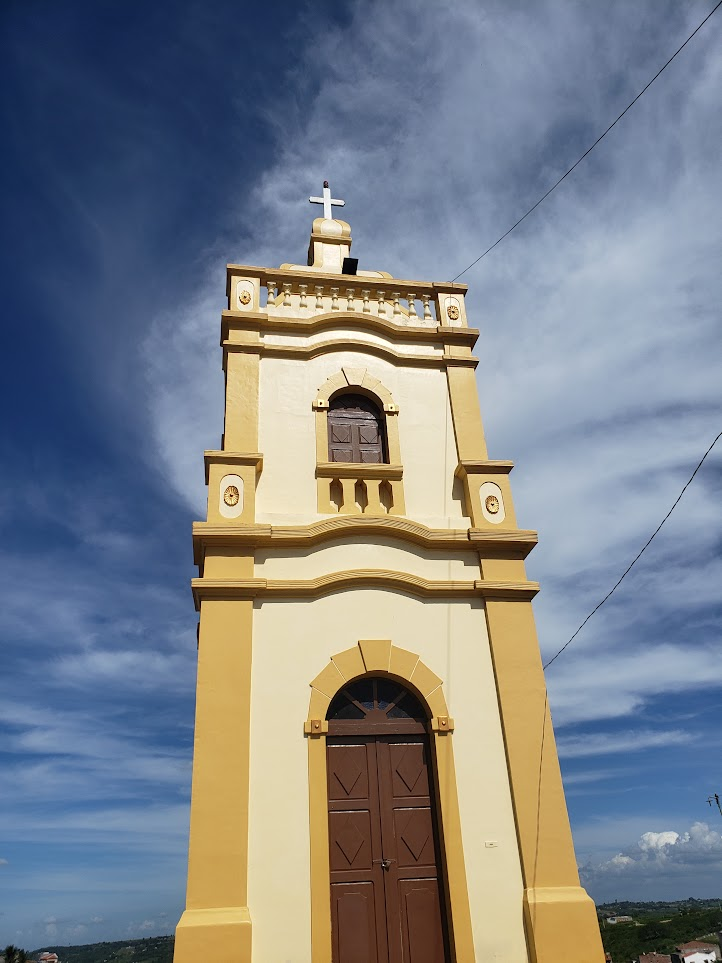

A MATÉMATICA PRESENTE NAS CONSTRUÇÕES HISTORICAS DE ESPERANÇA-PB
Este site trata-se do resultado de uma pesquisa de iniciação científica desenvolvida entre Setembro de 2022 e Agosto de 2023. Cuja temática central abrangeu, entre outros tópicos, a presença da matemática nas principais construções históricas do município de Esperança, localizada no estado da Paraíba. Dentro dessa perspectiva, a finalidade desse site é divulgar para a comunidade em geral, especialmente para a região de Esperança. O produto desenvolvido com a pesquisa, que teve apoio financeiro do Conselho Nacional de Desenvolvimento Científico e Tecnológico, (CNPq) foi a criação de um site que concentra, informa e divulga os resultados obtidos.
Nesse contexto, para uma melhor organização do site, o estruturamos da seguinte maneira:
- Apresentamos inicialmente uma definição do que é a matemática;
- Em seguida definimos o que é uma construção;
- Discutimos a relação entre matemática e construção;
- Depois a importância das manifestações matemática no cotidiano;
- Em seguida, as principais construções humana e a matemática presente nelas;
- Depois explanamos a engenharia por trás das construções;
- E por último, apresentamos as principais construções históricas do município de Esperança e as identificações matemáticas em tais obras.
Com base no blog do Brasil Escola, a Matemática é uma ciência que busca estabelecer, de maneira clara e estruturada, conceitos e técnicas para a compreensão de fenômenos. Entre os tópicos de estudo da Matemática, estão os números e suas operações, as estruturas algébricas, as formas geométricas, a probabilidade, a análise de dados, entre muitos outros.
A matemática não se limita apenas a operações aritméticas básicas, como adição, subtração, multiplicação e divisão, mas também envolve áreas mais avançadas, como álgebra, geometria, cálculo, estatística, teoria dos números, álgebra linear, topologia, entre outras. Ela oferece ferramentas para resolver problemas práticos e teóricos, desde calcular a trajetória de um foguete até entender as propriedades abstratas de estruturas matemáticas complexas.
Com base no blog OQUEE construção é um processo que envolve a montagem de qualquer coisa desde as consideradas mais básicas, tal como uma casa, edifícios, até as mais complexas, como no caso de um arranha-céu, viadutos, pontes, entre outros.
Em essência, uma construção é o processo ou resultado de montar elementos para criar algo novo, seja isso algo concreto ou palpável, como um edifício, ou algo mais abstrato, como um argumento lógico ou uma teoria científica. O significado exato de "construção" varia de acordo com o contexto em que é utilizado.
A presença da Matemática na indústria da construção é uma constante que transcende épocas e culturas, estabelecendo-se como um elemento fundamental na criação, análise e desenvolvimento de estruturas que sustentam a sociedade moderna. Desde as antigas civilizações que ergueram monumentos grandiosos até as avançadas estruturas contemporâneas, a Matemática desempenha um papel essencial na garantia da segurança, eficiência e estética das edificações.
Um dos princípios matemáticos centrais na construção é a Geometria. O estudo das formas, dimensões e posições relativas dos elementos arquitetônicos é crucial para garantir a estabilidade e a funcionalidade de uma estrutura. Os arquitetos e engenheiros empregam conceitos geométricos para criar projetos que otimizem a utilização do espaço, minimizem o desperdício de materiais e assegurem que a construção seja resistente às forças naturais, como gravidade e ventos.
Em grande medida, as construções antigas eram bem simples e práticas, pois pela falta da tecnologia disponível que temos hoje, a maioria dos profissionais não usavam de grandes cálculos e da engenharia que temos atualmente. É valido ressaltar que, não só construções dos antepassados, mas como também as de hoje em dia, existe toda uma matemática por trás, e esse conhecimento arquitetônico vem se reforçando com a ajuda dos cálculos. É através da matemática que os profissionais de construção definem a quantidade de material a ser usado, à área a ser construída, o tempo até ser e entregue, elaboração das plantas e o custo total das obras.
A matemática é importante no nosso dia a dia, pois é através dela que conseguimos passar um troco em um mercado, ou fazer as contas do mês, ou até mesmo quando acordamos e vamos olhar a hora no nosso celular ou despertador. Com o decorrer do tempo, a matemática moderna apresentou um novo cenário a esta ciência, em sua forma de ser apresentada e ensinada, o que fez com que seus conteúdos fossem exercitados envolvendo as situações do cotidiano, através dos contextos.
>Nessa perspectiva de mudança na abordagem da matemática, CUNHA indica que o ensino dessa disciplina deve levar em consideração a formação humanística e o currículo escolardeve levar a essa formação. Isso tornou-se necessário, pois a tecnologia evoluiu muito e a matemática está ligada a diversosfatores, tais como economia, finanças, saúde, engenharia, entre outras.
As principais construções humanas abrangem uma variedade de tipos, desde antigas maravilhas até modernas estruturas arquitetônicas e engenharia civil. A presença da Matemática nessas construções é notável, influenciando o design, a estabilidade estrutural, a eficiência e muito mais. Aqui estão alguns exemplos notáveis:
Pirâmides do Egito: As pirâmides do Egito, como as Pirâmides de Gizé, são exemplos impressionantes da aplicação de princípios geométricos. A base quadrada das pirâmides e os ângulos específicos das faces foram calculados com precisão, demonstrando o conhecimento matemático da época. A trigonometria também foi usada para determinar a altura das pirâmides e a inclinação das faces.
A Grande Muralha da China: A Grande Muralha é uma série de fortificações interconectadas que se estendem por milhares de quilômetros. Na sua construção, foram aplicados conceitos geométricos para determinar as dimensões, ângulos e posições dos segmentos da muralha. Além disso, cálculos matemáticos ajudaram a definir os materiais necessários e a eficácia defensiva da estrutura.
Catedral de Notre-Dame: A arquitetura gótica das catedrais, incluindo a Catedral de Notre-Dame, incorpora princípios matemáticos como proporções áureas e sequências geométricas. O uso desses conceitos contribuiu para a harmonia visual e estrutural das catedrais, permitindo que elas alcançassem alturas impressionantes com vitrais e arcos complexos.
Torre Eiffel: A icônica Torre Eiffel foi projetada por engenheiros que aplicaram conhecimentos de análise estrutural avançada. A geometria e o cálculo foram empregados para determinar as proporções das partes da torre e a distribuição uniforme das cargas, garantindo a estabilidade e a segurança da estrutura.
Pontes Suspensas (ex: Ponte Golden Gate): As pontes suspensas são exemplos de engenharia onde a Matemática desempenha um papel vital. Equações de cálculo estrutural são usadas para calcular as tensões nas cabos e torres, considerando, fatores como o peso dos veículos e as forças do vento. O cálculo matemático garante a resistência da ponte enquanto mantém a estética e a funcionalidade.
Arranha-céus (ex: Burj Khalifa): Arranha-céus modernos como o Burj Khalifa incorporam análise matemática avançada para garantir a estabilidade vertical e lateral. A Matemática é usada para calcular as cargas de vento e terremotos, além de determinar os materiais e as dimensões necessárias para suportar essas forças.
Ponte Akashi Kaikyō: A Ponte Akashi Kaikyō, no Japão, é a ponte suspensa mais longa do mundo. Seu design depende fortemente da Matemática para calcular as tensões nos cabos, a inclinação das torres e a distribuição das cargas. Modelos matemáticos precisos foram essenciais para a construção dessa estrutura imponente.
A Engenharia Civil desempenha um papel fundamental na concepção, planejamento, projeto, construção e manutenção de estruturas e edificações que moldam o ambiente construído ao nosso redor. A engenharia por trás das construções é uma disciplina intrincada que exige um conhecimento profundo de ciência, matemática, tecnologia e criatividade para transformar conceitos abstratos em realidade tangível, resultando em infraestruturas seguras, funcionais e esteticamente agradáveis.
O processo de construção começa com o estudo e análise detalhados do local onde a edificação será erigida. Isso envolve a avaliação das condições geológicas, topográficas e ambientais para determinar as bases sobre as quais a estrutura será construída. Essa fase inicial é crucial para a seleção adequada dos materiais e métodos construtivos a serem empregados.
Em conclusão, a engenharia por trás das construções é um campo complexo e interdisciplinar que combina ciência, matemática, tecnologia e criatividade para dar vida a projetos arquitetônicos. O trabalho dos engenheiros civis é crucial para a criação de estruturas duradouras e funcionais que moldam as cidades e influenciam a vida das pessoas de maneira significativa.
1- ESCOLA DOM MANUEL PALMEIRA
FIGURA-1 "FAIXADA CENTRAL"
Segundo o Site Revivendo Esperança, o Ginásio Diocesano de Esperança foi fundado em 1945 e teve sua pedra inaugural por parte da administração do Padre João Honório, mas somente foi concluído em 1953 pelo então pároco Manuel Palmeira da Rocha. As aulas iniciaram no ano letivo de 1958, com os cursos Primário e Ginasial. E a primeira turma, com 52 alunos, formou-se no dia 10 de dezembro de 1961. No passado chamado de “Ginásio Diocesano de Esperança”, a escola Dom Palmeira é um patrimônio histórico esperancense.
ANÁLISE MATEMÁTICA:
FIGURA-2 "FAIXADA LATERAL"
Nesta imagem identificamos uma parábola e um quadrilátero. A parábola que está identificada em branco representa uma quádrica que é uma curva matemática presente em muitas construções, desde a antiguidade até a atualidade, cuja função é representada por F(X) = ax² + bx + c. Nesse caso específico da imagem, é possível inferir que o coeficiente a da função F(X) é negativo, pois, é perceptível na imagem que a concavidade da parábola está voltada para baixo. Já a segunda identificação, destacada de verde, trata-se de um retângulo que aparece quase que em toda a totalidade de construções, sejam elas antigas ou contemporâneas. Entre os elementos do retângulo podemos destacar a sua área, A, dada por A = b x h, onde b é a base e a h é a altura.
FIGURA-3 "FAIXADA CENTRAL"
Ao observamos a imagem, podemos notar a presença de uma parábola e dois setores circulares que formam uma semi-circunferência. A parábola, claramente delineada em branco, representa uma forma curvilínea matemática conhecida como uma curva cônica. Sua expressão matemática é composta pela equação F(X) = ax² + bx + c. O caso dessa imagem podemos observar, que o coeficiente da função F(X) se encontra negativo, pois, é notável que a concavidade da parábola está para baixo. Já a segunda identificação, consiste em uma semi-circunferência, uma figura geométrica pervasiva que transcende eras e épocas, encontrando-se presente em um vasto espectro de edificações ao longo da história. Sua equação matemática se dá pelo A= 2 πr / 2 onde 'r' é o raio da semicircunferência e π é uma constante aproximadamente igual a 3,14159.
FIGURA 4 "INTERIOR DA ESCOLA, PARTE DO PÁTIO"
Na presente ilustração, é possível discernir a presença de uma parábola, uma figura matemática que se destaca em matiz cromático amarelado. A referida parábola configura-se como uma entidade quadriculada de relevância matemática, que historicamente tem permeado diversas construções arquitetônicas, desde eras ancestrais até o momento. Sua formalização analítica se dá por meio da expressão funcional F(X) = ax² + bx + c. No contexto particular desta representação gráfica, emerge a dedução de que o coeficiente 'a' inserido na formulação funcional F(X) possui um valor negativo. Essa inferência se apoia na observação manifesta na imagem, onde se torna perceptível que a parábola em questão apresenta uma orientação côncava voltada para a porção inferior.
FIGURA 5 "PÁTIO DA ESCOLA"
Na presente imagem, logramos identificar a presença de uma circunferência, cuja demarcação se faz notória em um matiz alvo. A circunferência em análise configura-se como uma forma geométrica intrínseca à matemática, cuja presença é proeminente em uma multiplicidade de construções, abrangendo uma extensa linha temporal que abarca desde tempos remotos até a contemporaneidade. A formalização desta entidade encontra-se encapsulada por uma equação cuja expressão transcende o escopo atual da redação; (x-h)² + (y-k)² = r².
FIGURA 6 "PÁTIO DA ESCOLA"
Na presente visualização, é cabível discernir a presença distintiva de uma parábola, notabilizada pela tonalidade verde. A parábola em escrutínio configura-se como uma forma quadriculada, dotada de eminência matemática, que encontra aplicabilidade em diversas concepções edificatórias, englobando uma extensão histórica que abarca desde eras antediluvianas até os tempos contemporâneos. A formalização analítica inerente a esta figura geométrica é representada pela função F(X) = ax² + bx + c. Na situação singular apresentada por esta imagem, é plausível deduzir que o parâmetro 'a' intrínseco à função F(X) assume um valor negativo. Tal conclusão pode ser estabelecida com base na observação visual patente na figura, onde se evidencia de maneira apreensível que a curvatura da parábola encontra-se orientada de forma descendente.
FIGURA 7 "ESCADA DO AUDITORIO"
Na análise atual, é possível discernir a manifestação característica de um quadrilátero, destacada pela coloração de tonalidade amarelada. O quadrilátero em observação assume a forma de um padrão quadriculado, possuindo relevância no contexto matemático, e encontrando aplicação em diversas concepções relacionadas à construção, abrangendo um período histórico que se estende desde épocas primordiais até o presente contemporâneo. A formalização analítica intrínseca a esta figura geométrica encontra sua representação por meio da função Área = base × altura ou A = b × h. Área = (diagonal 1 × diagonal 2)/2 ou A = (d1 × d2)/2.
2- BIBLIOTECA MUNICIPAL

FIGURA 8 "FRENTE DA BIBLIOTECA"
(Segundo o Site "Revivendo Esperança") A nossa Biblioteca já existe desde os primórdios da nossa emancipação política municipal (1925), tendo como uma das mais antigas bibliotecárias, Maria Nazaré Cunha - Naza - ainda residindo em nossa cidade. A Biblioteca foi denominada de Biblioteca Pública Dr.Samuel Duarte, por Lei Municipal de n.º 099 de 05 de setembro de 1963, ato esse sancionado pelo então prefeito Arlindo Carolino Delgado.
2.1 ANÁLISE MATEMÁTICA
FIGURA 9 "FRENTE DA BIBLIOTECA"
Dentro desta estrutura, é possível discernir a manifestação de elementos geométricos de notável relevância: parábolas, figuras geométricas e simetria. Nos círculos de coloração azul, emerge de maneira discernível a presença marcante de parábolas, cujas equações são configuradas como: F(X) = ax² + bx + c = 0, assumindo uma concavidade voltada para baixo, onde o coeficiente "A" adquire um valor negativo, resultando em (F(x) = -ax²). No círculo verde, de maneira análoga, se destaca a presença de retângulos, cuja equação geral se configura como: A = base × altura (A = b ⋅ h). Nos círculos coloridos de tonalidade vermelha, identificamos a notável presença da paralelidade. Essa disposição paralela, seja na orientação vertical ou horizontal, culmina em uma intrínseca perpendicularidade, conferindo à figura uma notável simetria. A equação geral que regula tal configuração é: x = -b / 2.ª. No círculo de tonalidade amarela, evidencia-se a manifestação de quadrados, cujas equações adotam a forma de: área (A) = base × altura (A = b ⋅ h). A compreensão destes princípios geométricos enriquece a percepção e análise de estruturas complexas, oferecendo um arcabouço matemático substancial para decifrar as interconexões inerentes a essas formas.
3- ESTRUTURA PRIVADA (CASA DOS DELGADOS)

FIGURA 10 "FRENTE DA CASA DOS DELGADOS"
Propriedade privada da família delgado. É perceptível que ao longo tempo foi mantido todos os traços arquitetônicos para com essa estrutura, valorizando os relevos e os balaústres da janela central. É importante destacar que não existem registros públicos a respeito da data de construção dessa propriedade.
3.1 ANÁLISE MATEMÁTICA
FIGURA 11 "FRENTE DA CASA DOS DELGADOS"
Dentro do âmbito desta estrutura, é plenamente perceptível a distinção e reconhecimento de diversos elementos geométricos de notória relevância, incluindo parábolas, parábolas simétricas, semicírculos, figuras geométricas e simetrias. No domínio do círculo de coloração branca, torna-se nitidamente evidente a manifestação de uma parábola, cuja formulação se apresenta como F(X) = ax² + bx + c = 0, ostentando uma concavidade orientada para cima, com o coeficiente "A" assumindo uma valência positiva (F(x) = ax²). Nos círculos tingidos de verde, emergem semicírculos que se fazem presentes, cuja descrição matemática corresponde a: π r² dividido por 2, representando a metade da área de uma circunferência. No contexto dos círculos de tonalidade azul, constatamos a presença de parábolas simétricas, cujas formulações se traduzem como P: y² + Dx + Ey + F = 0. O círculo vermelho destaca-se por abrigar a representação de um retângulo, cuja formulação geral pode ser expressa como: A = base × altura (A = b ⋅ h). Na esfera delimitada por tonalidade amarela, é perceptível a presença de dois trapézios menores, cuja descrição matemática é dada por: área (A) = (base maior + base menor) × altura / 2 (A = (a + b)h/2). Nos círculos de coloração negra, podemos depreender a existência da disposição paralela. Tal paralelidade, seja na orientação vertical ou horizontal, culmina em uma intrínseca perpendicularidade, atribuindo à figura uma notável simetria. A equação que governa esta configuração é: x = -b / 2.ª. O entendimento abrangente destes princípios geométricos oferece um substrato matemático substancial para a análise e interpretação de estruturas complexas, enriquecendo a compreensão das interrelações subjacentes a essas formas diversas.
4- IGREJA MATRIZ

FIGURA 12 "FRENTE DA IGREJA MATRIZ"
Segundo o Site Revivendo Esperança, todos os esperancenses são testemunhas do badalar do relógio. Para toda a população, todos os olhos não se cansaram de olhar o relógio, no sentido de saber a hora certa, nas ocasiões mais importantes, ficando costumeiramente, atentos ao horário. As pessoas que não possuíam relógio confiavam cegamente no relógio da igreja, na sua precisão, durante as vinte e quatro horas do dia. Muita gente gracejava com pessoas que perguntavam as horas a alguém que tinha relógio no braço e respondia, com ares de brincadeira: CONSULTE O RELÓGIO DOS POBRES! Surgindo na década de 40 entre a década de 50.
4.1 ANÁLISE MATEMÁTICA:
FIGURA 13 "FRENTE DA IGREJA MATRIZ"
Na presente estrutura, é manifestamente evidente a identificação da presença de fundamentos matemáticos em pontos estruturais específicos. Dentre esses elementos, destacam-se as parábolas alocadas nos pontos numerados de 3 a 7, cujas formulações gerais adotam a configuração matemática F(X) = ax² + bx + c = 0, caracterizando uma concavidade voltada para baixo (-ax²). Além disso, constata-se igualmente a incorporação das circunferências nos pontos 1 e 2, cuja formulação geral assume a seguinte configuração: x² + y² – 2ax – 2by + a² + b² – r² = 0. Tal estrutura também pode conter elementos trapezoidais e uma pirâmide, cuja equação se simplifica para a² em relação ao quadrado da lateral. Destarte, para a computação do volume inerente a uma pirâmide de configuração quadrada, é conduzida a avaliação do produto entre o quadrado do comprimento da aresta da base e a altura correspondente da pirâmide. Este resultado é então submetido à divisão por três, conforme as considerações geométricas pertinentes da pirâmide, e dividimos por três.
5- CAMPO DO AMÉRICA
FIGURA 14 "FRENTE DO CAMPO AMÉRICA"
O estádio José Ramalho da Costa, mas conhecido por “Campo do América” foi inaugurado em 1954, e já foi palco de vários campeonatos. O time do América de esperança alcançou grande prestígio e participou de grandes campeonatos.
5.1 ANÁLISE MATEMÁTICA
FIGURA 15 "FRENTE DO CAMPO AMÉRICA"
Nesta estrutura arquitetônica, torna-se notória a manifestação intrínseca dos princípios matemáticos em segmentos específicos. Estes se materializam, por exemplo, nas parábolas que se inscrevem nos elementos numerados de 3 a 7. A equação geral que as governa assume a forma F(X) = ax² + bx + c = 0, evidenciando uma concavidade orientada para baixo, representada por -ax². Ademais, as circunferências deixam sua marca nos elementos 1 e 2, regidas pela equação geral: x² + y² – 2ax – 2by + a² + b² – r² = 0. É também plausível encontrar elementos trapezoidais, além de uma pirâmide cuja formulação se expressa como a = l². Com vistas ao cálculo do volume inerente a uma pirâmide quadrangular, procede-se calculando o produto entre o quadrado do comprimento da aresta da base e a altura da pirâmide, para, em seguida, efetuar a divisão desse resultado por três.
6- CAPELINHA DAS PEDRAS

FIGURA 16 "FRENTE DA CAPELINHA DAS PEDRAS"
Inaugurada em 1925, a até então conhecida “capelinhas das pedras” servia como ponto turístico, de local e lazer em Esperança. A capela foi construída e edificada sobre imenso lajedo de pedra, denominado pelos antigos Indígenas de “araçá". É conhecida como a menor capela do Brasil. Ela se tornou um grande patrimônio cultural.
6.1 ANÁLISE MATEMÁTICA:
FIGURA 17 "FRENTE DA CAPELINHA DAS PEDRAS"
Nesta composição arquitetônica, emergem elementos de ordem matemática em diversos pontos estruturais que merecem análise. Inicialmente, no ponto 2, encontramos uma parábola cuja representação se define através da equação: F(X) = ax² + bx + c = 0, caracterizando uma concavidade direcionada para a região inferior (-ax²). Adicionalmente, no ponto 3, transparece a influência da geometria, enquanto, por sua vez, no ponto 4, identificamos a inscrição de uma circunferência. Essa última se enquadra na equação definida por: x² + y² + mx + ny + p = 0. A intersecção desses elementos matemáticos na estrutura contribui para uma abordagem mais abrangente e enriquecedora da análise dessa edificação.
EQUIPE ORGANIZADORA:
REFERÊNCIAS: